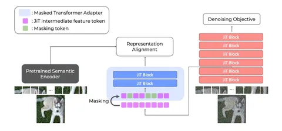

REPA хорошо зарекомендовала себя для латентных диффузионных моделей. Берутся промежуточные фичи генеративной модели и обучаются быть похожими на фичи предобученного энкодера вроде DINO. Кажется логичным просто перенести тот же подход на pixel-space-модели. Но с JiT это привычного буста не даёт, а при долгом обучении может сделать даже хуже.
Авторы статьи PixelREPA, которую мы разбираем сегодня, связывают проблему с несовпадением пространств представлений.
DINO становится bottleneck`ом, его фичи сжимают информацию об изображении и отбрасывают часть мелких и высокочастотных деталей. В латентном пространстве тоже уже произошло информационное сжатие, поэтому алайнмент между DINO и латентными диффузионными моделями имеет смысл. А JiT работает напрямую с пикселями и может сохранять гораздо более детальную информацию.
Когда высокоразмерные фичи JiT напрямую выравнивают с более компактными DINO-фичами, происходит representation collapse, то есть разные с точки зрения JiT изображения становятся неразличимыми после алайнмента. Особенно хорошо это видно на парах изображений, которые DINO считает очень похожими. Там REPA сильнее всего ухудшает результат. И чем размерность pixel space выше, тем заметнее проблема.
Как чинят?
Авторы предложили не матчить JiT и DINO напрямую, а сначала научиться выжимать из «богатых» JiT-фичей более компактное представление.
Для этого:
Именно маскирование оказывается важной частью фикса. JiT с обычной REPA работает хуже исходной модели. Если заменить простой проектор между фичами JiT и DINO на более мощный, результат станет получше, но он всё ещё не будет дотягивать до исходного JiT. И только когда к новому проектору добавляют маскирование части токенов, удаётся превзойти базовую модель.
Интереснее всего в работе не конкретный рецепт, а вывод: эффективность representation alignment`а зависит от пространства, в котором живёт генеративная модель.
Отсюда возникает гипотеза о том, что, возможно, обычную REPA в pixel space стоит не только модифицировать, но и просто вовремя выключать. В начале она помогает сформировать семантику, а позже начинает мешать модели учить более fine-grained-признаки. И это подтверждается нашими внутренними экспериментами.
Разбор подготовил
CV Time
